Jennifer knows that a key part of any digital plan submission or data validation workflow is to provide the results to the submitter. Without this feedback, they will have to do a lot more work to identify the problems. Providing a detailed and accurate validation report will make it easier for the submitter to fix any problems, thereby reducing the total time to get valid results into the system.
Jennifer is also aware that FME can produce reports in many different ways. If her department already had a business intelligence tool or data analyst who could set up a reporting workflow, FME could simply supply the necessary data for reporting. This option would require writing the data to a database, data warehouse, or data lake, and setting up the reporting in a different tool.
Another option would be to stream the results back in a format suitable for display using custom front-end code, e.g., JSON or XML. You can also connect web apps to FME Server through the FME Server REST API. This method can produce powerful and tailormade results, but it requires writing custom code, which doesn’t work for every project.
Jennifer’s team is small, so she wants a quick and lightweight solution. She decides to use the HTMLReportGenerator. This transformer will let her quickly create custom HTML snippets, tables, and web maps. Combined with FME Server, the results can be instantly sent back to the submitter, all without having to write any code.
Jennifer decides to create three sections for the HTML report:
To create the report summary, Jennifer connects two transformers to the StatistiscsCalculator_2:Summary port: a DateTimeStamper and then an HTMLReportGenerator.
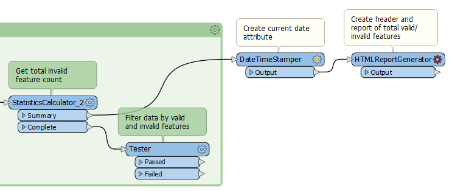
Jennifer will use the DateTimeStamper to add a date and time to her report so the submitter knows when it was run. She opens its parameters and chooses “Local” for the Time Zone. This will create a timestamp in standard FME format using the time zone of the machine running the workspace.
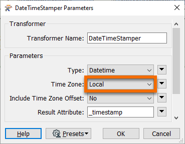
Next, Jennifer opens the HTMLReportGenerator parameters. She will build report contents by selecting components from the dropdown on the left, where she can also add, remove, and reorder components in the report. Jennifer clicks the empty first row under Page Contents and chooses Header.
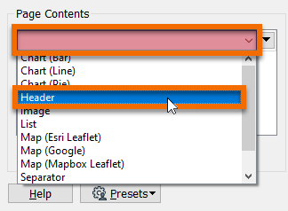
Under Content Settings she enters “Data Validation Report” for the Text and sets the Header Level to "H1".
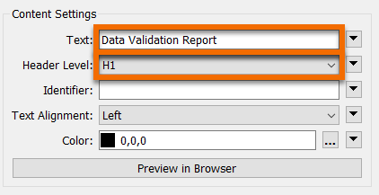
Then she clicks in the empty row below Header and selects Custom HTML. This component will let her create custom text that reports attribute values she’d like the user to see. She double-clicks the empty cell next to Custom HTML and enters the following HTML snippet in the Text Editor:
<p>Report Date: @DateTimeFormat(@Value(_timestamp),%Y-%m-%d %H:%M)</p> <p>Total Features: @Value(total_features.max)</p>
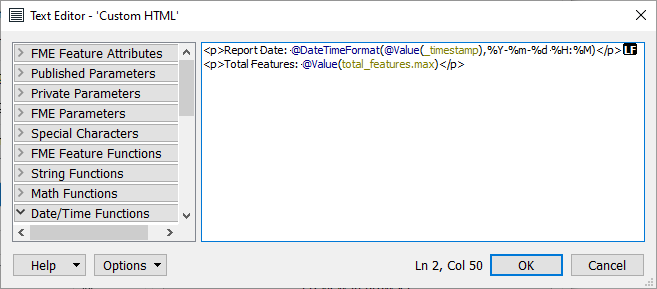
The @Value() sections will insert the value of the chosen attribute. @DateTimeFormat() will turn the basic timestamp into a formatted date time string.
She clicks OK.
The final component Jennifer adds is a Table. She fills out the Table section like this:
Table Style: Striped
|
Column Contents |
Column Name |
|
validation_result |
Validation Result |
|
FEATURE_ID.total_count |
Features |
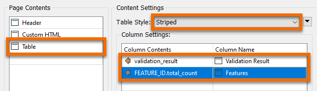
Then she clicks OK.
Jennifer could run her workspace here and preview the HTML using feature caching and Visual Preview, but it won’t be rendered until she opens it in a browser. She needs to add an HTML writer in order to test this section.
She adds an HTML writer using Quick Add and sets its Dataset path to C:\FMEData2020\Output\Training\validation.html. She connects the HTMLReportGenerator to the HTML writer feature type and runs her workspace. She clicks Open Containing Folder to find the HTML file and then opens it in her preferred browser. She sees the summary including a table. The formatting isn’t great, but this is a good start!

Next, Jennifer would like to add a web map showing any invalid features. She can easily make a basic map with the HTMLReportGenerator, but she’d also like this map to have popups with information about the invalid feature. This step will help the submitter identify problems to fix.
To create the custom text to use in the popup, Jennifer adds an AttributeCreator_2 connected to the Tester:Failed port.
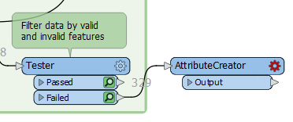
She creates a New Attribute called “label” and sets the Attribute Value to:
ID: @Value(FEATURE_ID). OGC valid: @Value(ogc_passed). Diameter valid: @Value(diam_passed).
This text will report the ID and validation result for each feature. She closes the AttributeCreator_2 parameter dialog.
Next, she adds an HTMLReportGenerator_2 connected to the AttributeCreator_2. She opens its parameters and clicks the blank dropdown under Page Contents and selects Header. She sets the Text to “Invalid Features Map” and sets it to Header Level “H1”.
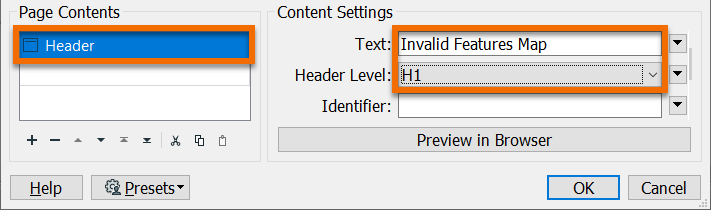
Then she clicks in the empty row under Header and chooses Map (Esri Leaflet).
This HTML report section will add a web map using an Esri basemap on a Leaflet map. She chooses “label” (the one she just created) for the Label Attribute and uses the defaults for the other parameters.
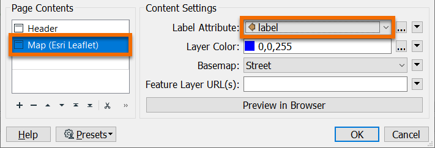
She clicks OK and connects the HTMLReportGenerator_2 to her HTML writer feature type. Then she runs the workspace. When it finishes she clicks the writer feature type and uses the Open Containing Folder button to find the HTML file she wrote. She opens it in a web browser. It looks good!
While the interactive web map is useful, the submitter might prefer to read through a table of invalid features. Jennifer can add this using another HTMLReportGenerator.
She adds HTMLReportGenerator_3 and connects it to the Tester:Failed port.
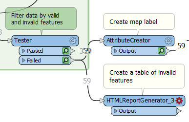
In this transformer, she adds a Header with Text set to “Invalid Features Table” and Header Level “H1”.
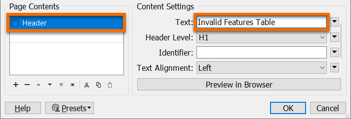
Next, she adds a Table. She chooses the Table Style “Striped”. Then she fills out the Column Settings table to show the values of the attributes FEATURE_ID, ogc_passed, and diam_passed for each invalid feature.
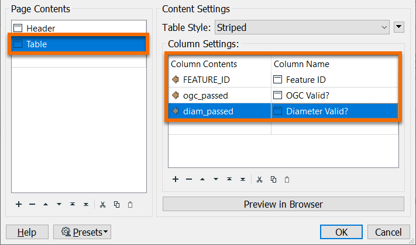
After filling out the Column Settings section she clicks OK. She connects the HTMLReportGenerator_3 to her HTML writer feature type, runs the workspace, and inspects the output. Now her page has a table of the invalid features.
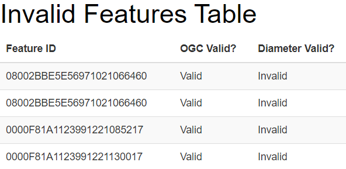
Jennifer notices three problems with her report:
She can address these issues with transformers.
First she will use AttributeCreators to add an attribute setting the section order (title, map, then table) and then a single Sorter to make sure the sections are written in the right order.
She adds an AttributeCreator_2 after the first HTMLReportGenerator (the title section) and makes a new attribute “order” set to 0. Then she adds an AttributeCreator_3 after HTMLReportGenerator_2 and sets “order” to 1. Finally, she adds an AttributeCreator_4 after HTMLReportGenerator_3 and sets “order” to 2.
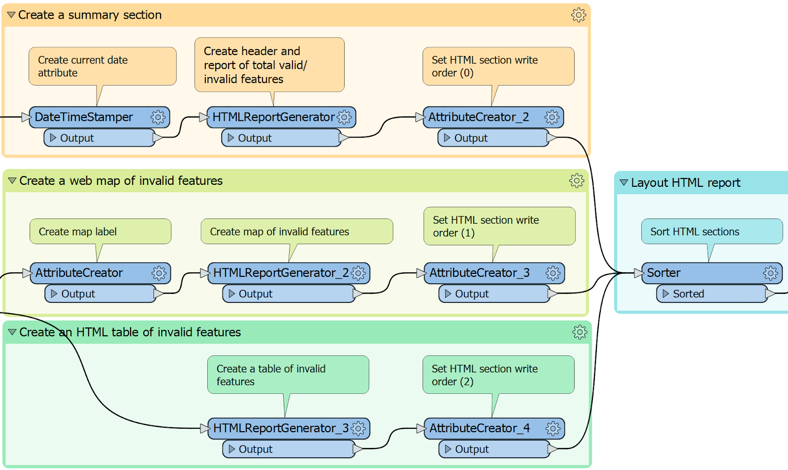
She then connects these three AttributeCreators to a Sorter and sets it to use the order attribute and sort Numeric, Ascending. This will ensure that the features reach the HTML writer feature type in the desired order.
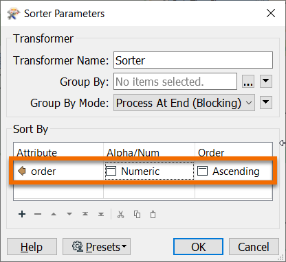
She clicks OK. Finally, she connects the Sorter to an HTMLLayouter transformer to add margins and a page title.
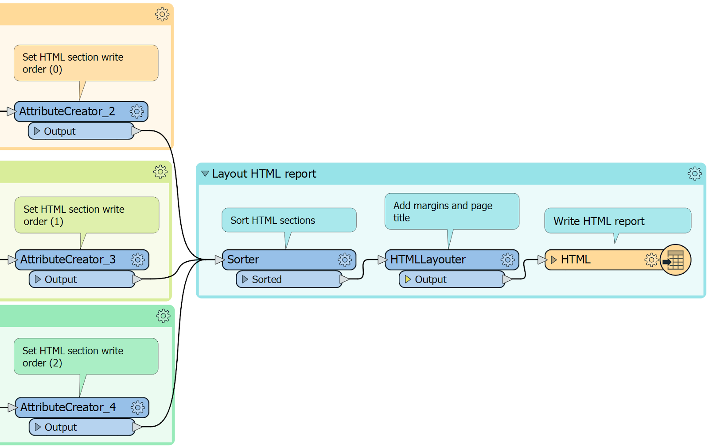
In the HTMLLayouter, she sets the Page Title to “Validation Results”.

Then she clicks OK.
Jennifer runs her workspace. Now she has a nicely formatted basic HTML report that tells the submitter what features are invalid. They can refer to the report, fix the problems, and resubmit.
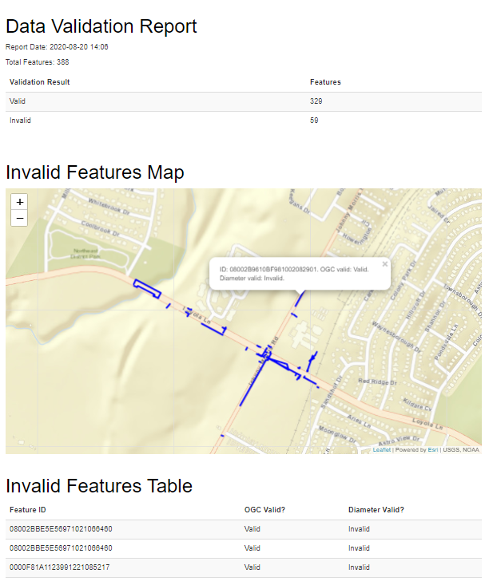
The final test is to make sure the workspace still works when the data is valid. Jennifer clicks the Run menu, makes sure Prompt for User Parameters is enabled, and then chooses Rerun Entire Workspace.
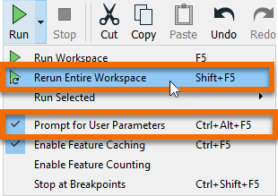
This time she chooses good_data.dwg as the input data and runs the workspace. It runs and she opens the output. The report simply shows the submitter that all features are valid.
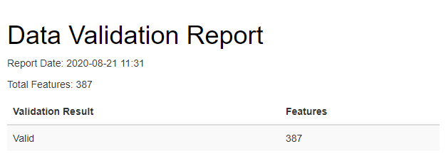
Make sure you have followed along with Jennifer’s steps. Repeat the steps above using your own installation of FME 2020.1 request an on-demand virtual machine in the footer link below.